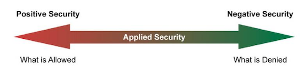
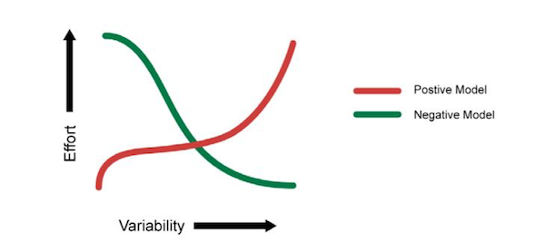
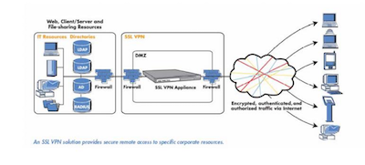

Unofficial - F5 Certification Exam Prep Material > F5 101 - App Delivery Fundamentals Study Guide 11/01/19 Source | Edit on
Section 4 - Security¶
Objective - 4.01 Compare and contrast positive and negative security models¶
4.01 - Describe the concept of a positive security model
Positive Security Model
A “positive” security model (also known as “whitelist”) is one that defines what is allowed, and rejects everything else.
The positive security model can be applied to a number of different application security areas. For example, when performing input validation, the positive model dictates that you should specify the characteristics of input that will be allowed, as opposed to trying to filter out bad input. In the access control area, the positive model is to deny access to everything, and only allow access to specific authorized resources or functions. If you’ve ever had to deal with a network firewall, then you’ve probably encountered this application of the positive model.
4.01 - Describe the concept of a negative security model
Negative Security Model
A “negative” (or “blacklist”) security model is one that defines what is disallowed, while implicitly allowing everything else.
A negative security model (or misuse based detection) is based on a set of rules that detect attacks rather than allow only valid traffic.
A negative security model is very common to Intrusion Detection and Prevention systems (IDPS). Therefore it is very important to understand what the differences are between the negative security model provided by an IDPS and the negative security model provided by a WAF.
4.01 - Describe the benefits of a positive security model
Benefits of a Positive Security Model
The benefit of using a positive model is that 0-day attacks, will be prevented as well as developer related shortcomings. However, the positive model is susceptible to false positives in that if you don’t account for everything that the application needs to function in the policy you will block it. Also if the application changes you will need to build a new custom policy to match the new changes.
4.01 - Describe the benefits of a negative security model
Benefits of a Negative Security Model
The benefit of a negative security model is that it can be deployed rapidly. You do not have to worry with building a complicated policy that has to deal with every transactional function of the application. You are simply blocking any known bad attacks that could happen. You are vulnerable to 0-day attacks of which the pattern of the attack is not already known.
4.01 - Security (Non-Blueprint)
Positive & Negative Security model
After many years of purely negative security provided by anti-virus scanners, IDS/IPS, and antispam engines, it’s refreshing to hear that the positive security model—the basis for tried and true security devices like network firewalls and ACLs—is coming back in vogue. Most recently, this positive policy re-emergence has revolved around the Web Application Firewall (WAF) and application security market. Yet with the positive security positioning comeback carries with it a very interesting point of detail: although many in the WAF space argue that the positive model is preferable, nearly all application security providers still rely on a partially negative solution. While acknowledging that a positive security model is the preferable model to secure web applications, many practitioners and vendors advocate a bilateral approach of both positive and negative security.
As the application security market continues to evolve and define itself, there continues to be diverging views on which security methodology is the best option. In reality, enterprise security decisions are highly dependent on many factors, most of which are more business than technology oriented. Implementing an application security solution that is both secure and practical—while still allowing for the fluid nature of protecting dynamic applications—requires taking the best pieces of technology and business analysis and synthesizing them into an effective and efficient security solution.
What Does “Good” Security Cost?
In theory, the best security is impenetrable, but practical security does not function as a control group. In a business environment, security is a multivariate problem. What is the performance of the security? How easy is it to deploy? What impact will adding security have on the cost per transaction? Is it more expensive to build an impenetrable security system or risk covering the cost of a public breach? The quality of the security is always questioned as well, but it’s never the only question. Many security-related questions come from the balance sheets, not the security engineers. Approaching security from a technical standpoint alone does not help the business; it hurts it.
Businesses constantly analyze their economic model to generate better operational efficiencies and a greater return on investment; the entire business intelligence market exists for this purpose. The driving force behind any IT security decision is an evaluation of a situation’s potential risks versus the investment necessary to circumvent these risks. In the same vein, a business’ security efforts should address a business problem; namely, to increase operational efficiencies. Security breaches can mar this efficiency, hurting a company’s value, either in real dollars, operational downtime, or loss of customer trust. In truth, the motivation behind every IT decision (including security decisions) is a business decision. This has been stated and fully advocated by Gartner as well:
Jay Heiser, a Gartner vice president, said the fundamental problem with a purely technical approach is that IT security professionals have no understanding of business. Speaking at [the] Gartner IT Security Summit in London, Heiser said businesses must now mature and appoint individuals who understand the complexities of business, rather than the simplicities of security.
When IT decisions become business decisions, blurring the distinction between secure value and business value, theoretical security and applied, or practical, security begin to separate. The theoretical approach places security on a singular plane, untouched by other business factors; applied security is comprised of the measure and level of actual security safeguards and implementations needed to accomplish business goals.
For a security product to be a functional part of a business’ IT infrastructure, the product’s applied security must be given more attention than the product’s theoretical security. A solution that only strives to provide ultimate security will almost always be replaced with a solution designed to apply “good enough” security and increase business efficiencies than one intending to recreate Fort Knox. Theoretical security is a checkbox criteria, applied security becomes more of a buy-and-use criteria. Applied security exists at an equilibrium point between total security (theoretical security) and total functionality (no security). The choice between these two—and what to sacrifice—is made based on the most operationally efficient method for achieving that prescribed balance. To better evaluate the root ROI question when dealing with security products, the next logical question becomes “Which model, positive or negative, provides this equilibrium in the most operationally efficient manner?
Positive vs. Negative Application Security
The two approaches to security most often mentioned in the context of application security—positive and negative are diametrically opposed in all of their characteristic behaviors, but they are structured very similarly. Both positive and negative security approaches operate according to an established set of rules. Access Control Lists (ACLs) and signatures are two implementation examples of positive and negative security rules, respectively.
Positive security moves away from “blocked,” end of the spectrum, following an “allow only what I know” methodology. Every rule added to a positive security model increases what is classified as known behavior, and thus allowed, and decreases what is blocked, or what is unknown. Therefore, a positive security model with nothing defined should block everything and relax (i.e., allow broader access) as the acceptable content contexts are defined.
At the opposite end of the spectrum, negative security moves towards “blocked what I know is bad,” meaning it denies access based on what has previously identified as content to be blocked, running opposite to the known/allowed positive model. Every rule added to the negative security policy increases the blocking behavior, thereby decreasing what is both unknown and allowed as the policy is tightened. Therefore, a negative security policy with nothing defined would grant access to everything, and be tightened as exploits are discovered. Although negative security does retain some aspect of known data, negative security knowledge comes from a list of very specific repositories of matching patterns. As data is passed through a negative security policy, it is evaluated against individual known “bad” patterns. If a known pattern is matched, the data is rejected; if the data flowing through the policy is unidentifiable, it is allowed to pass. Negative security policies do not take into account how the application works, they only notice what accesses the application and if that access violates any negative security patterns.
Discussions on preferred security methods typically spawn very polarized debates. Tried and true security engineers might ardently argue the merits of the positive security model because it originates from the most “secure” place—“Only allow what I know and expect.” Many business pundits would argue that the negative model is the best as it starts in the most “functional” place—
“Block what I know is bad and let everything unknown through.” Both groups are correct and yet both opinions become irrelevant when projected onto applied security, because both positive and negative security is theoretical. Applied security falls somewhere in the middle of the spectrum, providing a practical balance. At some point, as the negative approach is tightened, it will take on characteristics of a more positive model, inching towards a more complete security approach.
Likewise, as a positive security model is loosened to accommodate new application behaviors, it will take on some aspects of a more negative approach, such as implementing data pattern matching, to block the more predictable attacks. As a positive policy continues to relax, it will move closer towards complete functionality. The point at which these two opposing concepts begin to overlap is where applied security starts to take shape.
This “meet in the middle” idea suggests that from an applied security standpoint, both models are capable of achieving the same delicate balance between “security” and “functionality.” The difference between these models stems from where each begins and where they collide. This can be as simple as the number of rules required to meet the end goal.
It is clear then that, from an operational efficiency standpoint, the undiluted concepts of neither the positive nor the negative approach intrinsically provides more efficiency than the other. In some cases, the positive approach generates the least number of rules while in other cases the negative approach generates the least. It would also appear that it is the nature of the applied policy and/or the content itself, which might determine the best approach. What then, are the qualities of the policy or content which makes one approach more efficient over the other?
Factors of an Effective Applied Security Model
Implementing successful application security architecture is not as easy as deciding how much negative security and how much positive security to mix together into a hypothetical applied security blender. By design, application security devices have to have some level of application knowledge, such as the type of content delivered by the application, which is accessing any point within the application, and how to map specific policy criteria to this information. Very specific application awareness of this nature is essential in building an efficient applied security policy.
The Effect of Content Variability
Within the scope of application security, Content Variability is a measure of the content that needs to be secured and includes a number of different component pieces: the number of objects, the number of types of content, frequency of content change, and the nature of the content. A site that only has five specific objects is much less variable than a site with 500 specific objects. Within those objects, the cohesiveness of the content type is also a factor; if all 500 objects share a common format, they are less variable than a site with where all 500 objects are unique. Obviously, a site that changes only once a year is much less variable than one that changes daily. Finally, the nature of that content—for example, whether it is dynamically generated or static is a contributing factor. Essentially, variability is a measure of the site complexity. The idea of Content Variability is a single measurable value based on all of these factors. The variability of the content dictates the amount of effort needed to achieve the prescribed applied security from the chosen model.
As depicted in the diagram, the higher the variability of the content, the easier it is to define a policy using the negative security model. As the complexity of the known content increases, it is easier to describe what isn’t allowed rather than what is. Conversely, the opposite effect is true of the positive model; the more variable the site content, more effort is required to define those elements that are allowed. For example, let us assume that we have 10 different types of content within our site out of a possible 100 different types of content known. Because the site exhibits little variability, or is more cohesive, it is much easier to define the 10 allowable types of content than to define the 90 types of restricted content; a positive model is much more appropriate in this case.
On the other hand, if the site is less cohesive, perhaps representing of 90 of the 100 different types, it now becomes more efficient to define the 10 restricted content types than it is to define the 90 allowed ones; thus a negative model is more efficient. Once again, both models are equally successful at producing a desired level of security, but the variability of the content determines which is more efficient in a given scenario. And as we map the concept of content variability back to applied security, it becomes obvious that we will take the necessary aspects from the negative security model and couple those with what is required from the positive model.
The most successful implementation will come from a joint applied security policy, addressing both the security and the business needs at same time.
Rule Specificity
As the content variability affects the ability to create and maintain a security policy, the same is true of the specificity of rules used to build that policy. Rule Specificity conveys the level of detail of the protection mechanism implemented for any particular rule. For example, a rule that blocks Unicode attacks may block them from any application on one end of the spectrum all the way to only protecting Unicode directory traversal attacks against IIS5 on the other end. Depending upon the specificity of a rule, many things may be allowed with a single rule (positive security) or disallowed with a single rule (negative security). But as is the problem with theoretical security, Rule Specificity itself is not an exact science.
A rule that is not specific enough may block too much, creating unnecessary false positives (blocking access that shouldn’t be blocked); a rule that is too specific may not block enough, creating false negatives. Content variability also impacts the efficiency of a policy by altering the level of specificity in the rules themselves. As the variability of the content increases, the ability to specifically stipulate what content is or isn’t allowed becomes more time consuming. In an ideal world, every rule would be as specific as possible for the particular application it was designed to protect, avoiding false positives and false negatives. Similarly, the level of rule specificity within an application security policy can vary greatly depending on the content variability experienced by the application.
Order of Precedence
A third factor in implementing an efficient applied security policy is the order of precedence: defining which parts of the security policy are enacted before other parts of the policy. This concept is often seen in programmatic search algorithms: “match first” or “match any.” Using a combination of negative patterns and positive policy rules with varying degrees of specificity is bound to create many conflicts. In order to arbitrate these conflicts an order of precedence for all rules must be defined and followed for the policy to remain coherent. This is a critical decision point for application security, because the policy must decide if it should implement a more funneled approach (parsing through the policy to weed out what doesn’t match) or if it should look for the most restrictive implementation first. Choosing the most specific rule may solve this order of precedence, whether it is positive or negative, and opening up access as data moves further through the policy.
Alternately, the order may be based on implementing a given rule set, for example, all traffic may be pattern matched first and if there are any positive matches, the data is rejected, regardless of which specific pattern was matched. No matter which method is chosen, if the policy is implemented with an incorrect order of precedence, access to the application could be blocked by a policy that tightens first. Likewise, a policy that applies rules too loosely may allow unintended access to the application.
And as precedence is factored into the applied security equation, traffic volumes must also be taken into consideration. A two percent false positive error rate may be an acceptable metric in an applied security policy of an application that handles 100 connections/day, but unacceptable for a 10 million connection/day application. Regardless of the precedence methodology used it should be well defined and easy to follow to make a policy easy to audit and manage.
Conclusion - Best Practices
The problem with a purely positive policy is simply that it’s merely the most appropriate model for about half of the situations in which it’s deployed. The other half are unnecessarily weighed down by the fact that a negative model would be much more efficient. That is why, as a matter of best practice, every security solution should support a weighted balance of both the positive and negative methodologies. In the strictest sense of the term, negative security provides the best applied security out of the box due to the effort applied by the security vendor before the product is shipped. Focusing on known security vulnerabilities, this will block the most attacks, despite content variability. However, this does not provide security against unknown attacks or allow specific functions to be allowed. For that, positive security is required. To lessen the amount of effort needed for a given application, positive security templates should be provided by the application vendors themselves to complement the negative security.
If the goal of applied security is to reach a pre-defined posture in the most efficient manner, then the choice of model is directly related to the variability of the content itself. Somewhere between total security and total functionality is where the desired applied security level exists, and—theoretically—either security model is capable of achieving this goal. But as stated above, theoretical security can only exist in a vacuum. Applied security is a business choice and concept that moves security into real-world implementations to attain the most efficient, functional method. Neither positive nor negative security models alone can deliver the most economical solution in every situation or environment. Applied together, however—and merged with the business needs and requirements—a holistic view of both approaches can help delineate between theoretical security and applied security, enabling businesses to realize the greatest ROI from any security policy implementation.
Objective - 4.02 Explain the purpose of cryptographic services¶
4.02 - Describe the purpose of signing
Purpose of Signing
A digital signature is a mathematical scheme for demonstrating the authenticity of a digital message or document. A valid digital signature gives a recipient reason to believe that the message was created by a known sender, that the sender cannot deny having sent the message (authentication and non-repudiation), and that the message was not altered in transit (integrity).
Digital signatures employ asymmetric cryptography. In many instances they provide a layer of validation and security to messages sent through a non-secure channel: Properly implemented, a digital signature gives the receiver reason to believe the message was sent by the claimed sender. Digital seals and signatures are equivalent to handwritten signatures and stamped seals. Digital signatures are equivalent to traditional handwritten signatures in many respects, but properly implemented digital signatures are more difficult to forge than the handwritten type. Digital signature schemes, in the sense used here, are cryptographically based, and must be implemented properly to be effective. Digital signatures can also provide non-repudiation, meaning that the signer cannot successfully claim they did not sign a message, while also claiming their private key remains secret; further, some non-repudiation schemes offer a time stamp for the digital signature, so that even if the private key is exposed, the signature is valid. Digitally signed messages may be anything representable as a bitstring: examples include electronic mail, contracts, or a message sent via some other cryptographic protocol.
4.02 - Describe the purpose of encryption
Topic
In data and telecommunications, cryptography is necessary when communicating over any untrusted medium, which includes just about any network, particularly the Internet.
Within the context of any application-to-application communication, there are some specific security requirements, including:
- Authentication: The process of proving one’s identity. (The primary forms of host-to-host authentication on the Internet today are name-based or address-based, both of which are notoriously weak.)
- Privacy/confidentiality: Ensuring that no one can read the message except the intended receiver.
- Integrity: Assuring the receiver that the received message has not been altered in any way from the original.
- Non-repudiation: A mechanism to prove that the sender really sent this message.
Cryptography, then, not only protects data from theft or alteration, but can also be used for user authentication. There are, in general, three types of cryptographic schemes typically used to accomplish these goals: secret key (or symmetric) cryptography, public-key (or asymmetric) cryptography, and hash functions, each of which is described below. In all cases, the initial unencrypted data is referred to as plaintext. It is encrypted into ciphertext, which will in turn (usually) be decrypted into usable plaintext.
4.02 - Describe the purpose of certificates and the certificate chains
Certificates and Certificate Chains
It all starts with something called a root certificate. The root certificate is generated by a certification authority (CA) and is embedded into software applications. You will find root certificates in Microsoft Windows, Mozilla Firefox, Mac OS X, Adobe Reader, etc. The purpose of the root certificate is to establish a digital chain of trust. The root is the trust anchor.
The presumption is that the application developer has pre-screened the CA, ensured it meets a minimum level of trust and has accepted the CA’s root certificate for use. Many application developers, including Adobe, Apple, Mozilla, Microsoft, Opera and Oracle, have root certificate programs. Others rely on the roots provided by the underlying operating system or developer toolkit.
One of the main functions of the root is to issue chain certificates to issuing CAs who are the first link in the chain of trust. Your Web browser will inherently trust all certificates that have been signed by any root that has been embedded in the browser itself or in an operating system on which it relies.
Why do you need an issuing CA? The purpose of the issuing CA is to isolate certificate policy from the root. Issuing CAs can be used to issue many different certificate types: SSL, EV SSL, Code Signing, Secure Email, Adobe CDS, etc. These certificate types are subjected to different requirements and risks, and as such have different certificate policies. The certificates may have different assurance levels such as high, medium and low. Issuing CAs may also be controlled by an organization other than that which controls the root.
The last link of trust is that between the end entity certificate and the issuing CA. In the case of an SSL certificate, the end entity certificate represents the linkage between a website owner and the website domain name. The SSL certificate is installed on the Web server along with the chain certificate. When a user browses to the website protected by the SSL certificate, the browser initiates the verification of the certificate and follows the chain of trust back to the embedded root.
In some cases, the CA may have chosen to issue end entity certificates directly from the root CA. This is an outdated practice; issuing directly from the root increases risk and limits how certificate policy can be managed and enforced.
4.02 - Distinguish between private/public keys
Private Key Encryption
Private key encryption is the standard form. Both parties share an encryption key, and the encryption key is also the one used to decrypt the message. The difficulty is sharing the key before you start encrypting the message - how do you safely transmit it?
Many private key encryption methods use public key encryption to transmit the private key for each data transfer session.
If Bob and Alice want to use private key encryption to share a secret message, they would each use a copy of the same key. Bob writes his message to Alice and uses their shared private key to encrypt the message. The message is then sent to Alice. Alice uses her copy of the private key to decrypt the message. Private key encryption is like making copies of a key. Anyone with a copy can open the lock. In the case of Bob and Alice, their keys would be guarded closely because they can both encrypt and decrypt messages.
Public Key Encryption
Public key encryption uses two keys - one to encrypt, and one to decrypt. The sender asks the receiver for the encryption key, encrypts the message, and sends the encrypted message to the receiver. Only the receiver can then decrypt the message - even the sender cannot read the encrypted message.
When Bob wants to share a secret with Alice using public key encryption, he first asks Alice for her public key. Next, Bob uses Alice’s public key to encrypt the message. In public key encryption, only Alice’s private key can unlock the message encrypted with her public key. Bob sends his message to Alice. Alice uses her private key to decrypt Bob’s message.
The thing that makes public key encryption work is that Alice very closely guards her private key and freely distributes her public key. She knows that it will unlock any message encrypted with her public key.
4.02 - Compare and contrast symmetric/asymmetric encryption
Symmetric Encryption
This system uses only private keys, which can be anything from a numerical symbol to a string of random letters. These private keys are used to encode a message, so that only the sender and the recipient of the message who know what the secret key is can “unlock” it and decrypt it. The system works pretty much like two best friends using a decoder ring to send secret messages to each other. The symmetric system’s only downside is the potentially unsafe private key transmission via the Internet, where other people can “crack” it and decode the message.
Asymmetric Encryption
As a solution for the not completely safe Symmetric Encryption, there is the Asymmetric Encryption system that uses a pair of keys for added security: a private and a public key. The private key is for yourself and the public key is published online for others to see.
The public key is used to access the encryption code that corresponds to your private key. So, if you were sending an encrypted message to Susan, which you do not want others to see, you would use her public key to encrypt it. She will be able to decrypt it with her own corresponding private key. Likewise, if she sends a message to you, she uses your public key to encrypt the message and you would use your private key to decrypt it.
Objective - 4.03 Describe the purpose and advantages of authentication¶
4.03 - Explain the purpose of authentication
What Is Authentication?
Authentication is the process of determining if a user or identity is who they claim to be. Authentication is accomplished using something the user knows (e.g. password), something the user has (e.g. security token) or something of the user (e.g. biometric).
The authentication process is based on a measure of risk. High risk systems, applications and information require different forms of authentication that more accurately confirm the user’s digital identity as being who they claim to be than would a low risk application, where the confirmation of the digital identity is not as important from a risk perspective. This is commonly referred to as “stronger authentication”.
Authentication processes are dependent upon identity verification and registration processes. For example, when Jane Doe is hired at an enterprise, she provides the enterprise with information and tokens of who she is (e.g. name, address, driver’s license, birth certificate, a SSN number, a passport, etc.). The enterprise may choose to immediately accept this information or, it may instead chose to run background checks on Jane to see if she is who she claims to be and determine if she has any criminal record. When the checks come back favorably, the enterprise will accept her identity and enter her into their systems. The identity registration process will usually involve issuing Jane with enterprise authentication mechanisms such as id and password, security token, digital certificate and/or registering some of her biometrics.
The authentication process is totally dependents on the identity validation and registration process used for Jane. If Jane presents false tokens, which are accepted by the enterprise, then the person acting as Jane will be positively authenticated every time, even though she is not the real Jane Doe. Authentication security therefore is only as good as the weakest link in the chain.
4.03 - Explain the advantages of single sign on
Password Authentication
Password authentication is the most common method of authentication. It is also the least secure. Password authentication requires the identity to input a user id and a password in order to login. Password length, type of characters used and password duration are password management is now critical concern in enterprises. The ability to easily crack passwords has resulted in high levels of identity theft. As a result, the high risk of passwords means most enterprises now deploy a layered security strategy. A user enters in their id and password for initial login to gain access to only low risk information and applications with other forms of authentication required for higher risk information and applications.
Single Sign On Authentication
Single Sign On (SSO), Reduced Sign On (RSO), or Enterprise Single Sign On (ESSO) is the ability to reduce the number of id’s and passwords a user has to remember. In most enterprises, a strong business case can be made to implement single sign on by reducing the number of password related help desk calls. SSO is also the architecture to require stronger forms of authentication for higher risk information and applications. Thus a user may login using their id and password to gain general low risk access to an enterprise. The SSO software enables them to not have to use multiple IDs and passwords. However, when the user tries to access more sensitive information and applications, the single sign on software will require the identity to input stronger authentication such as a security token, a digital certificate and/or a biometric.
4.03 - Explain the concepts of multifactor authentication
Multi-factor Authentication
Multifactor authentication (MFA) is a security system in which more than one form of authentication is implemented to verify the legitimacy of a transaction. The goal of MFA is to create a layered defense and make it more difficult for an unauthorized person to access a computer system or network.
Multifactor authentication is achieved by combining two or three independent credentials: what the user knows (knowledge-based authentication), what the user has (security token or smart card) and what the user is (biometric verification). Single-factor authentication (SFA), in contrast, only requires knowledge the user possesses. Although password-based authentication is well suited for website or application access, it is not secure enough for online financial transactions.
4.03 - Describe the role authentication plays in AAA
Authentication, Authorization, and Accounting (AAA)
Authentication, authorization, and accounting (AAA) is a term for a framework for intelligently controlling access to computer resources, enforcing policies, auditing usage, and providing the information necessary to bill for services. These combined processes are considered important for effective network management and security.
As the first process, authentication provides a way of identifying a user, typically by having the user enter a valid user name and valid password before access is granted. The process of authentication is based on each user having a unique set of criteria for gaining access. The AAA server compares a user’s authentication credentials with other user credentials stored in a database. If the credentials match, the user is granted access to the network. If the credentials are at variance, authentication fails and network access is denied.
Following authentication, a user must gain authorization for doing certain tasks. After logging into a system, for instance, the user may try to issue commands. The authorization process determines whether the user has the authority to issue such commands. Simply put, authorization is the process of enforcing policies: determining what types or qualities of activities, resources, or services a user is permitted. Usually, authorization occurs within the context of authentication. Once you have authenticated a user, they may be authorized for different types of access or activity.
The final plank in the AAA framework is accounting, which measures the resources a user consumes during access. This can include the amount of system time or the amount of data a user has sent and/or received during a session. Accounting is carried out by logging of session statistics and usage information and is used for authorization control, billing, trend analysis, resource utilization, and capacity planning activities.
Authentication, authorization, and accounting services are often provided by a dedicated AAA server, or a program that performs these functions. A current standard by which network access servers interface with the AAA server is the Remote Authentication Dial-In User Service (RADIUS).
4.03 - SAML Authentication Not on Blueprint
SAML Authentication - What is SAML?
SAML - Security Assertion Markup Language
SAML, developed by the Security Services Technical Committee of “Organization for the Advancement of Structured Information Standards” (OASIS), is an XML-based framework for exchanging user authentication, entitlement, and attribute information. SAML is a derivative of XML. The purpose of SAML is to enable Single Sign-On for web applications across various domains.
Why SAML?
There are four ‘drivers’ behind the creation of the SAML standard:
Limitations of Browser cookies: Most existing Single-Sign On products use browser cookies to maintain state so that re-authentication is not required. Browser cookies are not transferred between DNS domains. So, if you obtain a cookie from www.abc.com, then that cookie will not be sent in any HTTP messages to www.xyz.com. This could even apply within an organization that has separate DNS domains. Therefore, to solve the Cross-Domain SSO (CDSSO) problem requires the application of different technology. All SSO products solve the CDSSO problem by different techniques.
SSO Interoperability: How products implement SSO and CDSSO are completely proprietary. If you have an organization and you want to perform SSO across different DNS domains within the same organization or you want to perform CDSSO to trading partners, then you will have to use the same SSO product in all the domains.
Web Services: Security within Web Services is still being defined. Most of the focus has been on how to provide confidentiality and authentication/integrity services on an end-to-end basis. The SAML standard provides the means by which authentication and authorization assertions can exchanged between communicating parties.
Federation: The need to simplify identity management across organizational boundaries, allowing users to consolidate many local identities into a single (or at least a reduced set).
Objective - 4.04 Describe the purpose, advantages, and use cases of IPsec and SSL VPN¶
4.04 - Explain the purpose, advantages, and challenges associated with IPsec
IPsec - IP Security
Internet Protocol Security (IPsec) is a protocol suite for securing Internet Protocol (IP) communications by authenticating and encrypting each IP packet of a communication session. IPsec includes protocols for establishing mutual authentication between agents at the beginning of the session and negotiation of cryptographic keys to be used during the session. IPsec can be used in protecting data flows between a pair of hosts (host-to-host), between a pair of security gateways (network-to-network), or between a security gateway and a host (network-to-host).
Internet Protocol security (IPsec) uses cryptographic security services to protect communications over Internet Protocol (IP) networks. IPsec supports network-level peer authentication, data origin authentication, data integrity, data confidentiality (encryption), and replay protection.
IPsec is an end-to-end security scheme operating in the Internet Layer of the Internet Protocol Suite, while some other Internet security systems in widespread use, such as Transport Layer Security (TLS) and Secure Shell (SSH), operate in the upper layers at Application layer. Hence, only IPsec protects any application traffic over an IP network. IPsec can automatically secure applications at the IP layer.point environments.
Why should you use IPsec?
IPSec VPNs are best suited for point-to-point access. Open tunneling protects data between two private networks or between IT-managed machines and a private network. IPSec is a perfectly viable solution when a permanent connection is required between two specific locations, for example between a branch or remote office and a corporate headquarters. It can also be used successfully to provide access to a small finite number of remote workers using tightly controlled corporate-issued laptops.
Many existing IPSec implementations can continue to work well for these use cases for which they were originally deployed. IT might consider keeping IPSec in these limited areas and extend remote access to other areas, such as trusted partners or extranet users, via a parallel SSL VPN solution. While a parallel VPN implementation is a viable choice for some enterprises, transitioning all access use cases through a single SSL VPN gateway might ultimately cost less and be easier to manage.
While many organizations still implement IPSec solutions today, however, for secure remote access the momentum has clearly shifted to SSL VPNs. Some organizations replace older versions of IPSec with newer versions that better streamline the provisioning of agents, or provide elements of end point control.
Nevertheless, these augmented IPSec VPNs still may not be as flexible or robust as SSL VPN solutions.
With increased access from unmanaged end point devices, end point control becomes a key risk factor. For managed devices, some IPSec solution providers suggest keeping IPSec and adding a network access control (NAC) solution. However, this greatly adds to the costs and complexity of administering and maintaining a separate appliance to achieve end point control, and still does not provide granular access controls down to the application layer, essentially allowing the remote device to be a node on the network.
Replacing IPsec
The ascendancy of IPSec technology as an innovative remote access solution peaked nearly a decade ago. IPSec VPNs are no longer an effective remote access solution when comparing costs of IT overhead and the desire for granular access controls for highly portal devices with the current demands of an increasingly mobile workforce. With early IPSec implementations, the considerable overhead involved in provisioning, maintaining and supporting dedicated IPSec clients was tolerated because IPSec access tended to be restricted only to relatively few managed-device use cases. In recent years, however, since broadband has become widespread and laptops have become cheaper, there has been greater incentive for IT to deploy more laptops and other mobile devices to more users across the enterprise, increasing the overhead needed to support distributed-client IPSec VPNs. While these devices are more likely to be transported beyond the physical office to be used at home or other remote sites, IPSec still views them as nodes on the network, regardless of location.
Workers are also now accessing corporate resources from more end point devices that are not directly managed by IT, such as home computers, WiFi-enabled laptops, PDAs, smartphones and public kiosks.
While most workers today are not full-time teleworkers, many commonly perform teleworking functions, such as sending and receiving e-mail and attachments from home before or after work hours, on weekends, while on the road or while on vacation. In addition, business partners need limited access to specific network resources, which introduces additional remote access challenges to the IT department in today’s world of outsourced supply chains. By providing employees and business partners with wider access to business tools and information, the proliferation of unmanaged end point devices has directly resulted in increased productivity. But it has also greatly increased the complexity for IT in controlling remote access, thereby minimizing the viability of distributed-client IPSec VPNs as an efficient remote access solution.
But still IPsec tunnels are still commonly used in site-to-site communications.
4.04 - Explain the purpose, advantages, and challenges associated with SSL VPN
SSL VPN
SSL is the standard protocol for managing the security of message transmission on the Internet. SSL is a higher-layer security protocol than IPSec, working at the application layer rather than at the network layer. By operating at the application layer, SSL can provide the highly granular policy and access control required for secure remote access. Because SSL is included in all modern browsers, SSL VPNs can empower today’s mobile workforce with clientless remote access—while saving IT departments the headache of installing and managing the complexity of IPSec clients. By extending the workplace to home PCs, kiosks,
SSL VPN solutions increase workforce productivity, for users with PDAs, and other unmanaged devices, resulting in a greater return on investment. And by eliminating the need to deploy and support “fat” clients, SSL VPN reduces IT overhead, resulting in a lower total cost of ownership.
An SSL VPN uses SSL to provide end users with authorized and secure access for Web, client/server and file share resources. SSL VPNs deliver user-level authentication, ensuring that only authorized users have access to the specific resources allowed by the company’s security policy. SSL VPNs start with providing access via a Web browser, removing the need for IT to provision clients to the end point device. For advanced access, agents may be required but SSL VPNs allow IT to have agents provisioned and activated within the context of the Web browser where Active X or Java based “thin” clients are transparently pushed through the browser, Alternatively, most SSL VPNs allow IT to pre-provision the agents directly to a user’s device, allowing the user to directly access the SSL VPN without having to open a Web browser.
Potential Benefits of Transitioning to an SSL VPN:
- Increased productivity: SSL VPNs work in more places, including home PCs, kiosks, PDAs and unmanaged devices over wired and wireless networks.
- Lower costs: SSL VPNs are clientless or use lightweight Web-delivered clients rather than “fat” IPSec clients, reducing management and support calls.
- Broadened security: SSL VPNs provide granular access and end point control to managed and non-managed devices
Why you should transition to SSL VPN
Today’s modern mobile workforce demands more secure access to more resources from more remote devices and platforms than ever before. Corporate boundaries are blurring, with partners, vendors and consultants playing as vital a role in daily operations as employees do. These changes suggest the need for an inverted model for the corporate network, evolving from the traditional enclosed-perimeter model to a distributed global network that connects employees, partners and customers over multiple Internet, intranet and VoIP channels. IT managers must now assume that any user and device is a potential risk point, whether the user is accessing remotely or plugged directly into the LAN. Disaster recovery and business continuity initiatives pose additional incentive to provide remote access from any end point location. Policy based granular access control becomes imperative.
Securing inverted networks with granular access control is an ideal use case for SSL VPN technology. SSL based access control appliances are the key to achieving application access control. SSL VPN solutions can detect what is running on the end point device, protect applications with granular access control based on user identity and device integrity and connect users securely and easily to applications on any device.
Because SSL is part of any Web browser, SSL VPN solutions provide clientless and Web-delivered thin client access that significantly increases the number of points from which employees, partners and customers can access network data. SSL VPN solutions greatly simplify the connection process for mobile 7 users, seamlessly traversing NAT, firewalls and proxy servers. SSL VPN solutions reduce IT support costs, lowering total cost of ownership. SSL VPN clientless access minimizes the IT overhead involved in provisioning, configuring and maintaining an enterprise remote access solution. Alternatively, certain SSL
VPN tunnel solutions provide a complete “in-office” experience by deploying an auto-updating, Web delivered thin client, eliminating the need for direct IT intervention. SSL VPN solutions also streamline administration costs by controlling all access to enterprise resources via a single, centralized gateway.
SSL VPN solutions also provide greater security compared to IPSec. Since SSL is an application layer protocol, an SSL VPN is inherently better suited for securing application-based remote access. SSL VPN solutions provide secure, granular access controls, ensuring that users gain access only to the designated resources or applications specific to their needs and according to security policy.
With SSL VPN solutions, end-user access to any given resource is restricted unless authorized. As a result, SSL VPN technology provides the granular access control that requires all users, regardless of location, to be granted explicit permission to access specific network resources. With SSL VPN technology, access control to applications and networks can be as general or specific as required to meet regulatory compliance and corporate security mandates.
4.04 - Given a list of environments/situations, determine which is appropriate for an IPsec solution and which is appropriate for an SSL VPN solution
SSL VPN vs IPSec
When presented with scenario-based questions on which solution is more appropriate IPSec or SSL VPN. Just remember that SSL VPN is the best solution for remote users to access business resources remotely and IPSec is the best solution for tunneling traffic between two business locations.